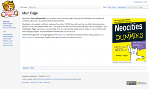

Slang Words
Unless the text that you are using is a quote from someone that happens to use a slang word, you should avoid using any forms of slang words, including Internet slang.
Neutral Point of View
You must try and aim to always write in a way that is neutral. It does not matter if you really love or really despise the subject that you are writing about, by using text that is not neutral, you are showing the reader that someone at the wiki is biased. Following this, do not use first person words like "I" or "me".
Quoting People
Using quotes in your article is fine, as long as you somehow credit the person who said/wrote it in some way. Quoting a Creative Commons project (like Wikipedia) is also okay, but make sure that the article is mostly written by yourself. If you have a long quote, using <tt><blockquote> before and after the text might help it out. An example of this can be seen below, with the text taken from Edward Lear's The Owl and the Pussycat:-
The Owl and the Pussy-cat went to sea
In a beautiful pea green boat,
They took some honey, and plenty of money,
Wrapped up in a five pound note.
While the viewer of the page does not see this, the mark-up for it would look like so;
<tt><blockquote> The Owl and the Pussy-cat went to sea<br> In a beautiful pea green boat,<br> They took some honey, and plenty of money,<br> Wrapped up in a five pound note.] </tt></blockquote>
All around the world, people use different date formats, this is fine for the most part, but what if someone who uses a different format do when they see a format that they are not use to? This can happen a lot, especially because of the growth of the World Wide Web and Internet. That is why here at the wiki, we ask that you use the ISO 8601 format. What does this mean? Well rather than writing 13/04/2020, 04/13/2020, 13-Apr-2020 or any other version, we ask that you write 2020-04-13. This would be YYYY-MM-DD.
A good place to find images that you can use would be Wikimedia (Wikipedia's image host), there are loads of other places to find open license images, Unsplash is another example of one. Searching up on the Web for free content can also be a good thing.
Making Your Own Images
Making your own images for an article can also be good if an article has no image to go along with it. We are very grateful to everyone who took the time in making original content for the wiki. If you do plan on making something for it, please follow these rules;
Keep in mind that your image will fall under the same license as Penny's Pages, meaning anyone would be able to use said image.
Taking a Screenshot

So then, you're writing an articles for a website that you think should be added to the wiki - that's great! To help the reader understand the article better, you might like to add a screenshot of the website, on a lot of devices taking a screenshot is a simple task of pressing the PrtScn button, this is fine for the most part, but that also means, for example, if you have a custom font set, then the web page will be displayed differently, you might also be on a device that isn't a computer desktop at all.
Because of this, and to have constancy, we would recommend to use Web-Capture Me, a free service that takes a screenshot of a website. Simply enter in the URL of the page, select the file format as PNG, then press the "Capture web page" button to make a screenshot. Try to make a screenshot of the main part of the website, the landing page, or a noticeable page of the site would be a good idea.
Please note that a website may not use an open license for its content, so making an image small as a way for it to be used under fair use would be ideal, of cause, if a website is using an open license, then uploading a large screenshot is fine.
Optimizing The Image
To help save room, use an image optimizer, a free program that you can use on your computer would be PNGGauntlet.